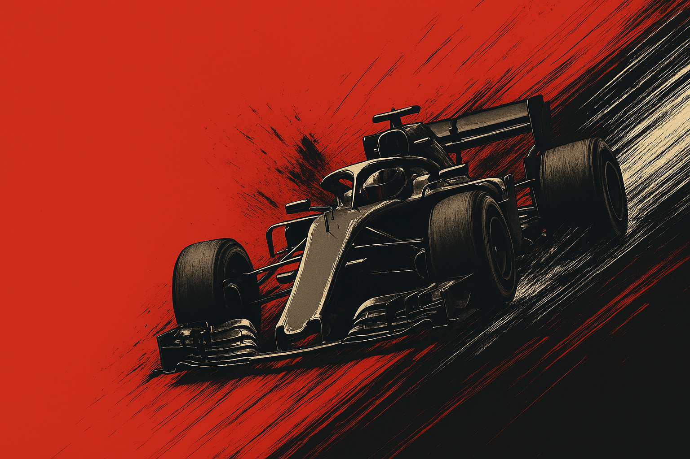
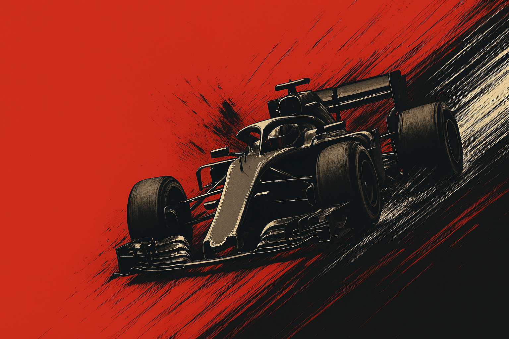

LOS NEUMÁTICOS DE LA F1 son clave en el rendimiento y la estrategia de carrera.
Determinan el agarre, la velocidad y el desgaste del monoplaza en cada circuito.
Pirelli, proveedor único, ofrece compuestos de seco (duro, medio y blando) y de lluvia (intermedios y extremos), cada uno con características específicas.
Elegir el neumático correcto en el momento adecuado puede marcar la diferencia entre ganar o perder posiciones.
Su gestión adecuada durante el fin de semana es vital para mantener el ritmo, evitar paradas innecesarias y maximizar el rendimiento del coche.
 
